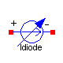
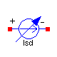
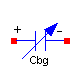
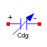
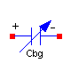
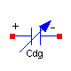

 




Parameters
| Name | Default | Description |
|---|
| VTO | | Zero-bias threshold voltage [V] |
| GAMMA | | Body-effect parameter [V0.5] |
| PHI | | Surface inversion potencial [V] |
| KP | | Transconductance parameter [A/V2] |
| W | | Gate width [m] |
| L | | Gate length [m] |
| LD | | Lateral diffusion [m] |
| LAMBDA | | Channel-length modulation [V-1] |
Modelica definition
model Isd
extends INTERFACE.OnePort;
extends INIT.Part;
outer SI.Voltage vthDC "Threshold voltage";
outer SI.Voltage vsgDC "Source to gate voltage";
outer SI.Voltage vsbDC "Source to bulk voltage";
outer SI.Voltage vsdDC "Source to drain voltage";
outer SI.Voltage vthTran "Threshold voltage";
outer SI.Voltage vsgTran "Source to gate voltage";
outer SI.Voltage vsbTran "Source to bulk voltage";
outer SI.Voltage vsdTran "Source to drain voltage";
outer SI.Voltage vsdTranSgn "Source-pin to drain-pin voltage";
outer SI.Voltage gate_vAC_Re;
outer SI.Voltage gate_vAC_Im;
outer SI.Voltage bulk_vAC_Re;
outer SI.Voltage bulk_vAC_Im;
parameter SI.Voltage VTO "Zero-bias threshold voltage";
parameter Real GAMMA "Body-effect parameter [V0.5]";
parameter SI.Voltage PHI "Surface inversion potencial";
parameter Real KP "Transconductance parameter [A/V2]";
parameter SI.Length W "Gate width";
parameter SI.Length L "Gate length";
parameter SI.Length LD "Lateral diffusion";
parameter Real LAMBDA "Channel-length modulation [V-1]";
protected
parameter Real beta=KP*W/(L - 2*LD);
Boolean pinPisSourceAC(start=true);
SI.Current isdDC "Source to drain current";
SI.Current isdTran "Source to drain current";
Real ARG(start=0);
SI.Conductance gsdAC "dIsd/dVsd";
SI.Conductance gmbsAC "dIsb/dVsb";
SI.Conductance gmAC "dIsd/dVsg";
SI.Voltage vsdAC_Re;
SI.Voltage vsdAC_Im;
SI.Voltage vsgAC_Re;
SI.Voltage vsgAC_Im;
SI.Voltage vsbAC_Re;
SI.Voltage vsbAC_Im;
SI.Current isdAC_Re;
SI.Current isdAC_Im;
equation
// ------------
// Static model
// ------------
iDC = noEvent(if vDC > 0 then isdDC else -isdDC);
isdDC = if vsgDC <= -vthDC then 0 else noEvent(if vsdDC < vsgDC + vthDC then
beta*(vsgDC + vthDC - 0.5*vsdDC)*vsdDC*(1 + LAMBDA*vsdDC) else 0.5*beta*(
vsgDC + vthDC)^2*(1 + LAMBDA*vsdDC));
// ------------------
// Large-signal model
// ------------------
iTran = if noEvent(vsdTranSgn >= 0) then isdTran else -isdTran;
isdTran = if vsgTran <= -vthTran then 0 else if noEvent(vsdTran < vsgTran +
vthTran) then beta*(vsgTran + vthTran - 0.5*vsdTran)*vsdTran*(1 + LAMBDA*
vsdTran) else 0.5*beta*(vsgTran + vthTran)^2*(1 + LAMBDA*vsdTran);
// ---------------------
// AC small-signal model
// ---------------------
{vsdAC_Re,vsdAC_Im} = if pinPisSourceAC then {vAC_Re,vAC_Im} else -{vAC_Re,
vAC_Im};
{vsgAC_Re,vsgAC_Im} = if pinPisSourceAC then -{gate_vAC_Re - p.vAC_Re,
gate_vAC_Im - p.vAC_Im} else -{gate_vAC_Re - n.vAC_Re,gate_vAC_Im - n.
vAC_Im};
{vsbAC_Re,vsbAC_Im} = if pinPisSourceAC then -{bulk_vAC_Re - p.vAC_Re,
bulk_vAC_Im - p.vAC_Im} else -{bulk_vAC_Re - n.vAC_Re,bulk_vAC_Im - n.
vAC_Im};
{isdAC_Re,isdAC_Im} = gsdAC*{vsdAC_Re,vsdAC_Im} + gmbsAC*{vsbAC_Re,vsbAC_Im}
+ gmAC*{vsgAC_Re,vsgAC_Im};
{iAC_Re,iAC_Im} = if pinPisSourceAC then {isdAC_Re,isdAC_Im} else -{isdAC_Re,
isdAC_Im};
when ctrl_AC then
pinPisSourceAC = (vDC >= 0);
gsdAC = if (vsgDC <= -vthDC) then 0 else if (vsdDC < vsgDC + vthDC) then
beta*(vsgDC + vthDC - vsdDC)*(1 + LAMBDA*vsdDC) + beta*(vsgDC + vthDC -
0.5*vsdDC)*LAMBDA*vsdDC else 0.5*beta*(vsgDC + vthDC)^2*LAMBDA;
gmbsAC = gmAC*ARG;
ARG = if vsbDC > 0 then 0.5*GAMMA/(sqrt(PHI) - 0.5*vsbDC/sqrt(PHI)) else
0.5*GAMMA/sqrt(PHI - vsbDC);
gmAC = if (vsgDC <= -vthDC) then 0 else if (vsdDC < vsgDC + vthDC) then
beta*vsdDC*(1 + LAMBDA*vsdDC) else beta*(vsgDC + vthDC)*(1 + LAMBDA*vsdDC);
end when;
end Isd;

Parameters
| Name | Default | Description |
|---|
| IS | | Reverse saturation current at 300K [A] |
Modelica definition
model Idiode
extends INTERFACE.OnePort;
extends INIT.Part;
parameter SI.Current IS "Reverse saturation current at 300K";
// Boolean forwardDC "Operation region";
// Boolean forwardTran;
SI.Voltage vDiodeTran "Voltage drop across the diode";
protected
SI.Conductance gAC(start=1) "AC small-signal conductance";
SI.Voltage thermalVolt "Thermal voltage";
equation
// Thermal voltage: kT/q
thermalVolt = temp/11600;
// ------------
// Static model
// ------------
iDC = IS*(exp(vDC/thermalVolt) - 1) + vDC*scaleGMIN*GMIN;
// -------------
// Dynamic model
// -------------
iTran = if noEvent(vDiodeTran > 0) then IS*(exp(vDiodeTran/thermalVolt) - 1)
+ vDiodeTran*GMIN else (IS/thermalVolt + GMIN)*vDiodeTran;
// ------------------
// Small-signal model
// ------------------
when ctrl_AC then
gAC = if (vDC > 0) then IS/thermalVolt*exp(vDC/thermalVolt) + GMIN else IS/
thermalVolt + GMIN;
end when;
{iAC_Re,iAC_Im} = gAC*{vAC_Re,vAC_Im};
end Idiode;

Parameters
| Name | Default | Description |
|---|
| IC | 0 | Initial voltage [V] |
| IC_ENABLED | false | IC enabled |
| CJ | | Capacitance at zero-bias voltage per squere meter of area [F/m2] |
| CJSW | | Capacitance at zero-bias voltage per meter of perimeter [F/m] |
| MJ | | Bulk junction capacitnce grading coefficient |
| MJSW | | Perimeter capacitance grading coefficient |
| FC | | Substrate-junction forward-bias coefficient |
| PB | | Junction potencial [V] |
| P | | Junction perimeter [m] |
| A | | Junction area [m2] |
Modelica definition
model Cdiode
extends BREAKOUT.Capacitor;
parameter Real CJ
"Capacitance at zero-bias voltage per squere meter of area [F/m2]";
parameter Real CJSW
"Capacitance at zero-bias voltage per meter of perimeter [F/m]";
parameter Real MJ "Bulk junction capacitnce grading coefficient";
parameter Real MJSW "Perimeter capacitance grading coefficient";
parameter Real FC "Substrate-junction forward-bias coefficient";
parameter SI.Voltage PB "Junction potencial";
parameter SI.Length P "Junction perimeter";
parameter SI.Area A "Junction area";
// Real der_vTran "Voltage derivative [V/s]";
protected
parameter Real F2=(1 - FC)^(1 + MJ);
parameter Real F3=1 - FC*(1 + MJ);
parameter Real FCtimesPB=FC*PB;
parameter Real CJtimesA=CJ*A;
parameter Real CJSWtimesP=CJSW*P;
parameter Real coef1=F3*(CJtimesA/F2 + CJSW*P/F2);
parameter Real coef2=(CJtimesA*MJ/F2 + CJSW*P*MJSW/F2)/PB;
parameter Real invPB=1/PB;
equation
// ------------------------
// Large-signal capacitance
// ------------------------
Cvar*der(vTran) = iTran;
Cvar = if noEvent(vTran < FCtimesPB) then CJtimesA/(1 - invPB*vTran)^MJ +
CJSWtimesP/(1 - invPB*vTran)^MJSW else coef1 + coef2*vTran;
// ---------------------------
// AC small-signal capacitance
// ---------------------------
when ctrl_AC then
CvarAC = if (vDC < FCtimesPB) then CJtimesA/(1 - invPB*vDC)^MJ + CJSWtimesP
/(1 - invPB*vDC)^MJSW else coef1 + coef2*vDC;
end when;
end Cdiode;

Parameters
| Name | Default | Description |
|---|
| IC | 0 | Initial voltage [V] |
| IC_ENABLED | false | IC enabled |
| PHI | | Surface inversion potencial [V] |
| LD | | Lateral diffusion [m] |
| W | | Gate width [m] |
| L | | Gate length [m] |
| TOX | | Gate oxide thickness [m] |
| EPSR | | Dielectric constant of the oxide |
| CGDO | | Gate-drain overlap capacitance per meter [F/m] |
| CGSO | | Gate-source overlap capacitance per meter [F/m] |
| sourceGatePinsC | | |
Modelica definition
model Cdg
extends BREAKOUT.Capacitor;
outer SI.Voltage vthDC "Threshold voltage";
outer SI.Voltage vsdDC "Source to drain voltage";
outer SI.Voltage vsdDCSgn "Source-pin to drain-pin voltage";
outer SI.Voltage vsgDC "Source to gate voltage";
outer SI.Voltage vthTran "Threshold voltage";
outer SI.Voltage vsdTran "Source to drain voltage";
outer SI.Voltage vsdTranSgn "Source-pin to drain-pin voltage";
outer SI.Voltage vsgTran "Source to gate voltage";
parameter SI.Voltage PHI "Surface inversion potencial";
parameter SI.Length LD "Lateral diffusion";
parameter SI.Length W "Gate width";
parameter SI.Length L "Gate length";
parameter SI.Length TOX "Gate oxide thickness";
parameter Real EPSR "Dielectric constant of the oxide";
parameter Real CGDO "Gate-drain overlap capacitance per meter [F/m]";
parameter Real CGSO "Gate-source overlap capacitance per meter [F/m]";
parameter Boolean sourceGatePinsC;
protected
parameter SI.Length LEFF=L + 2*LD "Effective length";
parameter SI.Capacitance COX=EPS0*EPSR*W*LEFF/TOX "Gate oxide capacitance";
constant Real EPS0=8.85e-12 "Permittivity of free space [F/m]";
parameter Real CGSOtimesW=CGSO*W;
parameter Real CGDOtimesW=CGDO*W;
parameter Real twoThirdsCOX=2/3*COX;
parameter Real threeFourthsCOX=3/4*COX;
parameter Real halfCOX=0.5*COX;
parameter SI.Voltage vsdTranEPS=1e-4;
parameter SI.Voltage vsdDCEPS=1e-4;
Real Csg;
Real Cdg;
Real CsgAC;
Real CdgAC;
Real CpinsSG;
Real CpinsDG;
Real CpinsSGAC;
Real CpinsDGAC;
equation
// ------------------------
// Large-signal capacitance
// ------------------------
Cvar*der(vTran) = iTran;
Cvar = if sourceGatePinsC then CpinsSG else CpinsDG;
CpinsSG = if noEvent(vsdTranSgn < -vsdTranEPS) then Cdg else if noEvent(
vsdTranSgn < vsdTranEPS) then 0.5*(Csg - Cdg)*vsdTranSgn/vsdTranEPS + 0.5*(
Csg + Cdg) else Csg;
CpinsDG = if noEvent(vsdTranSgn < -vsdTranEPS) then Csg else if noEvent(
vsdTranSgn < vsdTranEPS) then 0.5*(Cdg - Csg)*vsdTranSgn/vsdTranEPS + 0.5*(
Csg + Cdg) else Cdg;
Csg - CGSOtimesW = if noEvent(vsgTran <= -vthTran - PHI) then 0 else if
noEvent(vsgTran <= -vthTran) then twoThirdsCOX*((vthTran - vsgTran)/PHI + 1)
else if noEvent(vsgTran <= -vthTran + vsdTran) then twoThirdsCOX else if
noEvent(vsdTran <= 2*vsdTranEPS) then halfCOX else twoThirdsCOX*(1 - ((
vsgTran - vsdTran + vthTran)/(2*(vsgTran + vthTran) - vsdTran))^2);
Cdg - CGDOtimesW = if noEvent(vsgTran <= -vthTran + vsdTran) then 0 else if
noEvent(vsdTran <= 2*vsdTranEPS) then threeFourthsCOX else COX*(1 - ((
vsgTran + vthTran)/(2*(vsgTran + vthTran) - vsdTran))^2);
// ------------------------------------------------
// AC small-signal capacitance and operation region
// ------------------------------------------------
when ctrl_AC then
CvarAC = if sourceGatePinsC then CpinsSGAC else CpinsDGAC;
CpinsSGAC = if noEvent(vsdDCSgn < -vsdDCEPS) then CdgAC else if noEvent(
vsdDCSgn < vsdDCEPS) then 0.5*(CsgAC - CdgAC)*vsdDCSgn/vsdDCEPS + 0.5*(
CsgAC + CdgAC) else CsgAC;
CpinsDGAC = if noEvent(vsdDCSgn < -vsdDCEPS) then CsgAC else if noEvent(
vsdDCSgn < vsdDCEPS) then 0.5*(CdgAC - CsgAC)*vsdDCSgn/vsdDCEPS + 0.5*(
CsgAC + CdgAC) else CdgAC;
CsgAC = if (vsgDC <= -vthDC - PHI) then CGSOtimesW else if (vsgDC <= -vthDC)
then twoThirdsCOX*((vthDC + vsgDC)/PHI + 1) + CGSOtimesW else if (vsgDC
<= -vthDC + vsdDC) then twoThirdsCOX + CGSOtimesW else if (vsdDC <= 2*
vsdDCEPS) then halfCOX + CGSOtimesW else twoThirdsCOX*(1 - ((vsgDC -
vsdDC + vthDC)/(2*(vsgDC + vthDC) - vsdDC))^2) + CGSOtimesW;
CdgAC = if (vsgDC <= -vthDC + vsdDC) then CGDOtimesW else if (vsdDC <= 2*
vsdDCEPS) then threeFourthsCOX + CGDOtimesW else COX*(1 - ((vsgDC + vthDC)
/(2*(vsgDC + vthDC) - vsdDC))^2) + CGDOtimesW;
end when;
end Cdg;

Parameters
| Name | Default | Description |
|---|
| IC | 0 | Initial voltage [V] |
| IC_ENABLED | false | IC enabled |
| PHI | | Surface inversion potencial [V] |
| LD | | Lateral diffusion [m] |
| W | | Gate width [m] |
| L | | Gate length [m] |
| TOX | | Gate oxide thickness [m] |
| EPSR | | Dielectric constant of the oxide |
| CGBO | | Gate-bulk overlap capacitance per meter [F/m] |
Modelica definition
model Cbg
extends BREAKOUT.Capacitor;
outer SI.Voltage vthDC "Threshold voltage";
outer SI.Voltage vsdDC "Drain to source voltage";
outer SI.Voltage vsgDC "Gate to source voltage";
outer SI.Voltage vthTran "Threshold voltage";
outer SI.Voltage vsdTran "Drain to source voltage";
outer SI.Voltage vsgTran "Gate to source voltage";
parameter SI.Voltage PHI "Surface inversion potencial";
parameter SI.Length LD "Lateral diffusion";
parameter SI.Length W "Gate width";
parameter SI.Length L "Gate length";
parameter SI.Length TOX "Gate oxide thickness";
parameter Real EPSR "Dielectric constant of the oxide";
parameter Real CGBO "Gate-bulk overlap capacitance per meter [F/m]";
protected
parameter SI.Length LEFF=L + 2*LD "Effective length";
parameter SI.Capacitance COX=EPS0*EPSR*W*LEFF/TOX "Gate oxide capacitance";
parameter Real CGBOtimesLEFF=CGBO*LEFF;
parameter Real COXtimesinvPHI=COX/PHI;
constant Real EPS0=8.85e-12 "Permittivity of free space [F/m]";
equation
// ------------------------
// Large-signal capacitance
// ------------------------
Cvar*der(vTran) = iTran;
Cvar - CGBOtimesLEFF = if noEvent(vsgTran < -vthTran - PHI) then COX else if
noEvent(vsgTran < -vthTran) then COXtimesinvPHI*(-vthTran - vsgTran) else 0;
// ------------------------------------------------
// AC small-signal capacitance and operation region
// ------------------------------------------------
when ctrl_AC then
CvarAC = if (vsgDC < -vthDC - PHI) then COX + CGBOtimesLEFF else if (vsgDC
< -vthDC) then COXtimesinvPHI*(-vthDC - vsgDC) + CGBOtimesLEFF else
CGBOtimesLEFF;
end when;
end Cbg;
HTML-documentation generated by Dymola Tue Oct 14 18:26:46 2003
.